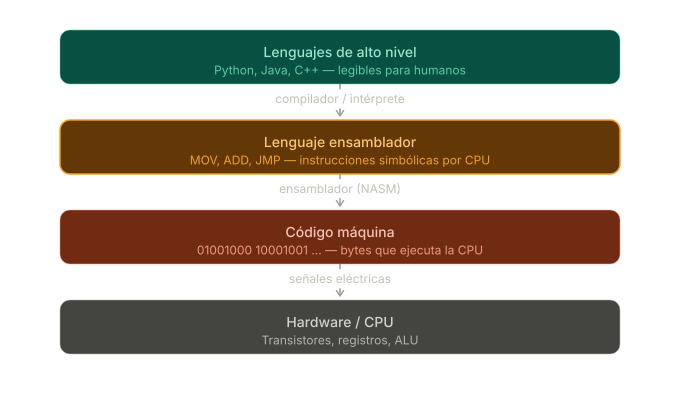
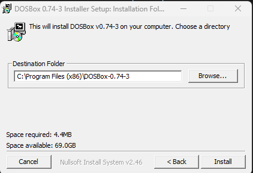
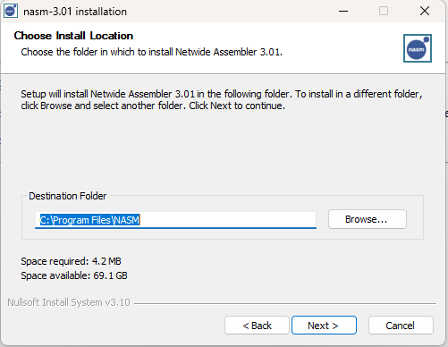
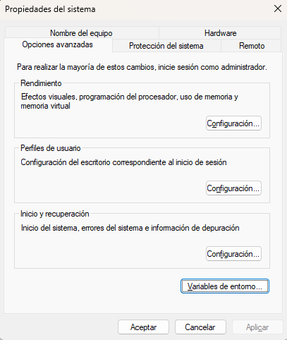
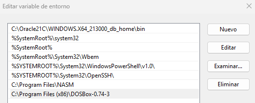
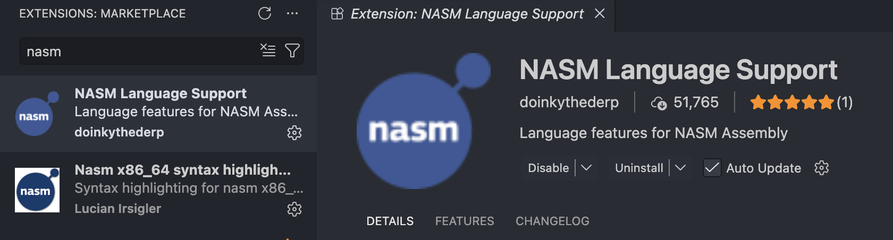
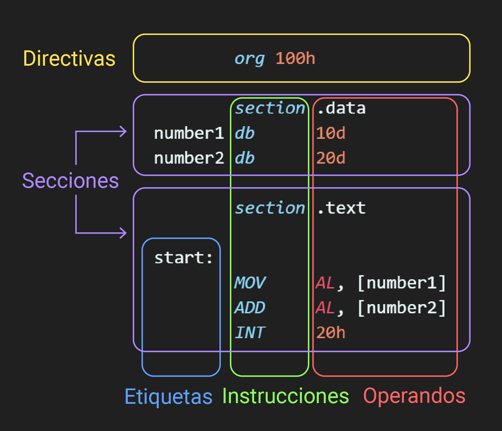
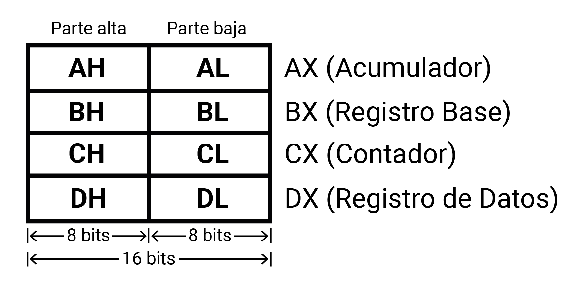

El lenguaje ensamblador es un lenguaje de bajo nivel que se comunica directamente con el hardware de la computadora. A diferencia de los lenguajes de alto nivel como Python o Java, el ensamblador se traduce directamente a código máquina, lo que permite un control preciso sobre la CPU y la memoria.

Para este laboratorio, utilizaremos las siguientes herramientas:
Antes de instalar cualquier herramienta, es importante entender el problema que cada una resuelve.
El lenguaje ensamblador x86 de 16 bits fue diseñado para sistemas operativos como MS-DOS, que se ejecutaban en hardware específico. Las computadoras modernas, en cambio, utilizan arquitecturas de 64 bits y sistemas operativos que no son compatibles con programas de 16 bits. Esto hace que ejecutar código ensamblador x86 directamente en una máquina moderna sea imposible sin algún tipo de emulación o virtualización.
DOSBox es un emulador que recrea el entorno DOS completo, incluyendo una CPU virtual de 16 bits, lo que nos permite ejecutar programas escritos para ese sistema operativo sin problemas de compatibilidad.
El código ensamblador que escribiremos es texto legible para humanos. Para que la CPU lo pueda ejecutar, ese texto debe convertirse a código máquina (bytes). Eso es exactamente lo que hace un ensamblador: traduce instrucciones simbólicas a binario.
Código .asm → NASM → Archivo .com → DOSBox → Ejecución
(texto) (ensambla) (binario) (emula DOS)
1. Descargar e instalar NASM y DOSBox
.exe desde nasm.us.¡Importante! Durante el proceso de instalación de ambas herramientas, haremos una pausa en la pantalla donde se elige el directorio de destino y guardaremos ambas rutas de instalación para cada programa. Las necesitaremos en el siguiente paso.


2. Configurar las variables de entorno
Una vez instalados ambos programas, debemos agregar sus rutas de instalación a las variables de entorno del sistema (específicamente a la variable PATH) para poder ejecutarlos directamente desde cualquier terminal.


1. Instalar NASM y DOSBox
Para macOS (usando Homebrew):
brew install nasm
brew install --cask dosbox
Para distribuciones de Linux basadas en Ubuntu/Debian:
sudo apt update
sudo apt install nasm dosbox
Los siguientes pasos aplican por igual sin importar el sistema operativo (Windows, macOS o Linux).
Para trabajar de manera cómoda, crea una carpeta para tus archivos de ensamblador.
El comando dosbox . abrirá DOSBox con el directorio de tu terminal montado automáticamente como la unidad C:, por lo que la forma recomendada y más sencilla de abrir tu entorno es navegando desde tu terminal hasta la carpeta del proyecto que acabas de crear y ejecutando:
dosbox .
Alternativa manual: Solo en caso de que el comando anterior desde la terminal no funcione de manera automática para ti, abre la aplicación de DOSBox directamente y ejecuta los siguientes comandos para montar tu carpeta de forma manual (cambiando la ruta de ejemplo por la ubicación real de tu proyecto):
mount c ruta/a/tu/carpeta/ensamblador
c:
Busca "NASM" en el marketplace de extensiones de VS Code e instala la extensión para el resaltado de sintaxis.

El lenguaje ensamblador X86 tiene una estructura específica. Sus componentes principales son:
section .text: La sección principal donde se escribe el código ejecutable.section .data: Usada para declarar variables estáticas o constantes que no cambian durante la ejecución.
Son componentes fundamentales para operaciones aritméticas y almacenamiento temporal. Cada registro es de 16 bits, pero puede dividirse en dos subregistros independientes de 8 bits (parte alta y parte baja). Residen en la Unidad de Ejecución (EU):

Se define como la forma en que una instrucción accede a sus operandos que pueden ser registros o ubicaciones de memoria.
Es la instrucción básica para copiar datos de un origen a un destino. Sintaxis general:
MOV destino, fuente
Permiten especificar el tamaño de los datos con los que se trabaja, previniendo errores de acceso a memoria:
Normalmente ensamblador puede inferir el tamaño del operando a partir del contexto, pero en casos de ambigüedad es necesario usar estas directivas para aclarar al ensamblador qué tipo de dato se está manejando.
Por ejemplo, al mover un valor inmediato a una dirección de memoria, el ensamblador no puede determinar si se trata de un byte o una word, por lo que es necesario especificarlo:
MOV word [200h], 0FFh ; Especifica que se mueve una word
Especifican cómo una instrucción obtiene sus operandos, afectando la flexibilidad y eficiencia del código. Sus principales modos son:
El operando es un valor constante (literal) codificado directamente en la instrucción. Tipos de datos soportados:
MOV AH, 12d ; Carga 12 en la parte alta de AX
MOV AL, 14ECh ; Carga 14EC en AL
MOV AL, 0FFh ; Valores que inician con letra deben llevar un cero antepuesto
MOV BH, 10010b
MOV BL, "A" ; Carga el código ASCII de "A"
Transfiere datos entre registros. La fuente conserva su valor original y el destino lo copia. Ambos registros deben tener el mismo tamaño.
MOV CX, AX ; CX copia el valor que AX tiene
Usa direcciones de memoria directas (entre corchetes) como fuente o destino. Cada dirección almacena 1 byte de información.
MOV [200h], CH ; de registro a memoria
MOV AH, [200h] ; de memoria a registro
Para valores mayores a 1 byte, se usa notación little endian (los bytes excedentes van a las direcciones siguientes):
; Si DX = 1241h
MOV [210h], DX ; 41h se guarda en [210h] y 12h en [211h]
Accede a los datos usando un registro base o índice (BX, BP, SI, DI) que contiene la dirección de memoria. Es ideal para arrays o acceso dinámico.
MOV BP, 210h ; Almacena la dirección de memoria a acceder
MOV AL, [BP] ; Obtiene el valor guardado en la dirección [210h] y lo mueve a AL
También se puede usar un desplazamiento para acceder a posiciones relativas:
MOV AL, [BP+1] ; Accede a la dirección BP + 1
1. Guardar el código en un archivo con extensión .asm.
2. Ensamblar el archivo con NASM ejecutando:
nasm -f bin <nombre>.asm -o <nombre>.com
Este comando genera un archivo ejecutable con extensión .com.
3. Abrir DOSBox desde la terminal con:
dosbox .
4. Dentro de DOSBox, cargar el programa en el depurador:
debug.exe <nombre>.com
Comando | Descripción |
| Muestra el estado actual de los registros de la CPU. |
| Ejecuta una sola instrucción (paso a paso). |
| Ejecuta |
| Ejecuta el programa completo hasta un punto de interrupción o hasta que finalice. |
| Muestra el contenido de la memoria en la dirección |
| Sale del depurador y regresa al prompt de DOSBox. |
A continuación, se presentan 2 ejercicios diseñados para poner en práctica los conceptos de este laboratorio. Escribe el código en un archivo .asm, ensámblalo y utiliza debug.exe en DOSBox para verificar los resultados paso a paso.
Objetivo: Dominar el manejo de subregistros, conversión entre sistemas numéricos y transferencias de datos complejas. Instrucciones:
F3h en AL y 2Dh en AH, formando así AX = 2DF3h.AX al registro BX.BX al registro CL.CL a decimal y luego a binario, almacenando cada resultado en DL y DH respectivamente.r en el depurador para confirmar que los valores se han transferido y convertido correctamente.Objetivo: Comprender el formato little endian, trabajar con múltiples datos en memoria y utilizar bp como puntero base. Instrucciones:
0300h: 5C7Eh en [0300h]9AB2h en [0302h]0F01h en [0304h]bp para apuntar a la dirección base 0300h.bp con desplazamientos para recuperar los bytes individuales de las tres palabras almacenadas y muévelos a los registros AX, BX y CX de la siguiente manera: AL y el byte de mayor peso a AH (formando AX).BL y el byte de mayor peso a BH (formando BX).CL y el byte de mayor peso a CH (formando CX).d 300 que los valores en memoria muestren el patrón little endian.